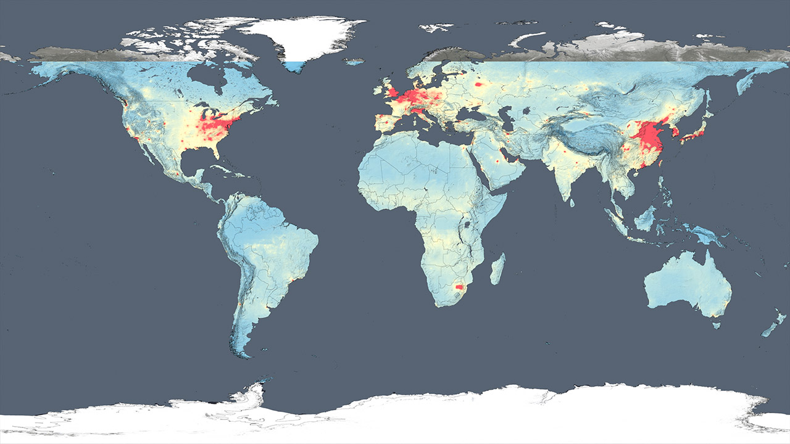
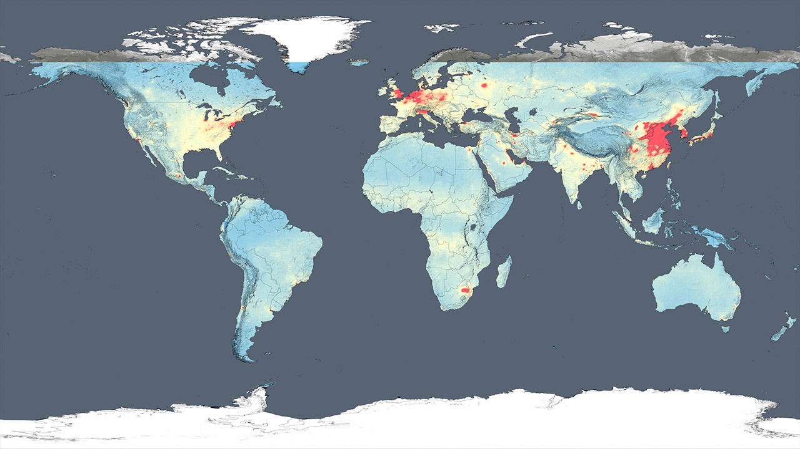

This is a recreation of a graphic from the NASA Air Quality Website. With permission from the original creator, the images and animation were recreated for the NASA HAQAST website which I created while working as a Research Assistant at the George Washington University.
Back to portfolio

